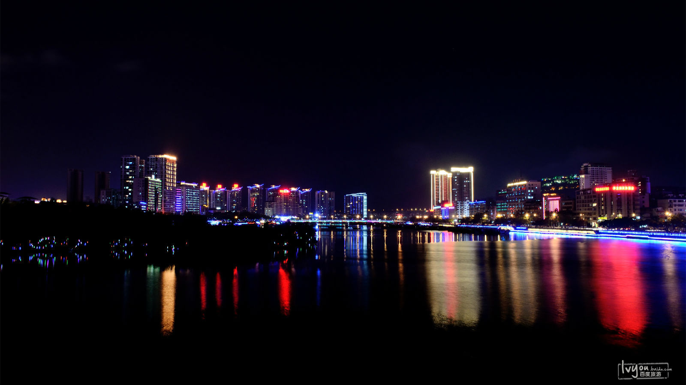

- 
三亚湾位于三亚市区，绵延22公里，是三亚最大的海湾。
三亚湾湾长沙细，岸上绿树如带，作为风情海湾，这里沙滩平缓，海面开阔，湛蓝天宇映衬着碧波万顷，景象万千。
三亚湾还有三个临海广场和一个滨海公园，其中海月广场离海边最近。长长海湾，规划分为三段，紧连市区一段为游乐观光漫游区域，稍远为公共海边泳场和海上活动区域，再远是拥有一批度假村的休闲度假区域。
可在这里享受海湾的舒适与乐趣。
景点类型：海滩
最佳季节：11月—次年3月最佳。 三亚的秋冬季温暖怡人，冬季更是到海滨旅游的最好时候。
在冬天，即使地球其他角落寒流来袭，仍可以穿着夏装、沙滩鞋在阳光充沛的海滩悠闲漫步，浸润在暖暖的海水中，吃着热带水果，享受着天涯海角的浪漫。
门票：免费